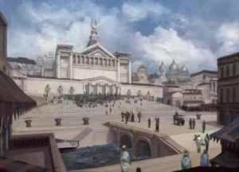

back
Freecity of Amantora

While technically considered a human city, Amantora is a freecity that accepts individuals of every races and ideology. The city is sizeable and while there is more humans than any other races, it is one of the most multicultural city on the continent. The city is held together by strong mercenary presence and a local government of representative.
The city is a major trade port and lives off mostly on commerce. Money flows in and out of this city regularly, it is has the greatest banks of the continent.